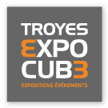
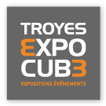

Bienvenue à l'UTT Arena 2015
Et c'est parti pour la dixième édition de l'UTT Arena, qui se déroulera du 4 au 6 Décembre 2015 ! Nouvelle formule cette fois,
l'UTT Arena aura lieu au Cube. Plus de joueurs, plus d'espaces, plus de fun !
L'UTT Arena est une « LAN Party » : un rassemblement de passionnés du jeu-vidéo, qui viennent jouer ensemble
durant tout un week-end. Cet évènement est composé non seulement de compétitions de haut-niveau (« Spotlights »)
mais aussi d'animations diverses, de tournois organisés par les joueurs eux-même, un coin détente, de la nourriture;
Bref, tout pour passer un week-end exceptionnel !
L'UTT Arena est organisée par l'UNG : une association de l'Université de Technologie de Troyes
Prenez vos places !
L'événement
- DESCRIPTION
- ANIMATIONS
- JEUX
- ÉQUIPES
- FAQ
Spotlights
Les spotlights sont la base de l'UTT Arena. Ils rassemblent les compétiteurs sur une liste de jeux prédéfinis.Et cette année ce sont les jeux League Of Legends, Counter-Strike: Global Offensive, Hearthstone et Ultra Street Fighter 4 qui sont à l'honneur !
Les spotlights sont des tournois commentés, streamés, et les équipes finalistes remportent des lots. Tout vos sens devront être affutés pour pouvoir survire à une journée entière de compétition !
Attention ! Les places des spotlights sont limités. Premiers inscrits, premiers sélectionnés. L'équipe doit être complète et les places de chaque joueur payées !
Animations
Les tournois compétitifs ne sont pas les seuls événements de cette UTT Arena. Vous pouvez organiser vos propres tournois en poule ou en arbre sur vos jeux favoris, participer aux concours, jouer aux jeux retros sur console ou battre les records de speedrunning : pas une seconde de répit sur tout le week-end.Festival
Cette année l'UTT Arena se déroule au Cube. Il fait partie du Festival des Jeux. Libre à vous d'aller visiter les différents stands de jeux de plateaux, de société et autres.Restauration
Toute la restauration est assurée par une équipe motivée, qui remplira vos ventres entre deux parties. Prix faibles, bonne nourriture et gaming intensif, quoi de mieux ?Équipe rouge/bleue
Tous les joueurs sont regroupés parmis deux équipes Rouge/Bleues. Toute participation fait gagner des points à votre équipe. Qui gagnera ? L'équipe bleue ou l'équipe rouge ?King of the Hill
Monter la colline est un objectif réaliste, mais rester au sommet demande plus de talent. Participez aux matchs King of the Hill et tentez de garder votre titre de champion de chaque jeu le plus longtemps possible.SpeedRunning
Qui n'a jamais rêvé de finir Portal en moins de 10 minutes ? Venez nous montrer votre talent à réduire les durées de jeux des jeux vidéos.Triathlon
Être le meilleur dans un jeu c'est bien. Dans deux jeux c'est mieux. Mais dans trois jeux ça devient complexe non ? Prouvez votre talent adaptatif en combinant trois jeux sur un tournoi !Oldies
Honnêtement, Warcraft III TFT et AoE2 ont-ils quelque chose à se reprocher face aux jeux récents ? Montrez aux autres votre suprématie cultivée depuis votre enfance sur les jeux mythiques.Arcade
Une association de jeux rétros en partenariat avec l'UTT Arena proposera plusieurs consoles et canapés pour la détente, ou pas. Affrontez vous sur Street Fighter ou l'un des nombreux jeux disponibles !Spotlights
Les jeux en spotlights de cette année sont : League of Legends, Counter-Strike : Global Offensive, Hearthstone et Ultra Street Fighter 4.Attention ! Les places des spotlights sont limités. Premiers inscrits, premiers sélectionnés. L'équipe doit être complète et les places de chaque joueur payées !
Jeux libres
Tous les jeux que vous possédez peuvent être joués en tournoi libres ou simplement en divertissement. Voici une liste non-exhaustive de propositions, ou vus sur les précédentes UTT Arena :Warcraft III : The Frozen Throne, Garry's Mod, Age of Empires II & The Conquerors, Team Fortress 2, Portal, Quake III, Left 4 Dead II, Tee Worlds, Track Mania, Unreal Tournament, Starcraft II, Dota 2, Hearthstone, Age of Mythology et plein d'autres !
Aucune équipe pour le moment ! C'est peut-être le moment de vous inscrire !
Foires Aux Questions
Inscription
Pendant la LAN
Tournois Spotlights
Animations
Contact
Spotlights
Les jeux en spotlights de cette année sont : League of Legends, Counter-Strike : Global Offensive, Hearthstone et Ultra Street Fighter 4.Règles générales :
1. L'équipe se réserve le droit de modifier le règlement à tout moment.
2. L'équipe se réserve le droit de prendre des décisions non couvertes ou en désaccord .
3. Les joueurs doivent être prêts quelques minutes avant le début de chaque match.
4. Les retards ne sont pas tolérés. Passé 10 minutes de retard, l'équipe devra jouer en incomplet ou déclarer forfait pour le match.
5. L'acool n'est pas autorisé sur place.
6. Les comportements déplacés, nuisant au confort des joueurs ou des organisateurs seront passibles d'une disqualification voire d'une expulsion.
League of Legends
16 équipes de 5 joueurs (2 remplaçants possibles) s'affronteront en 5v5 dans 4 poules de 4 équipes; puis dans un arbre commençant en quart de finale.Tous les matchs seront en mode draft classiques. Le changement d'un joueur par un remplaçant ne peut pas se faire une fois le pick commencé.
Les poules seront distribuées aléatoirement, organisées en BO1. Les poules commenceront Vendredi soir. L'équipe ayant le plus de victoires passe dans l'arbre. En cas d'égalité, comptage au nombre de morts (« death average »).
Tous les matchs de l'arbre sont en BO3, et la finale en BO5.
Counter-Strike : Global Offensive
8 équipes de 5 joueurs s'affronteront dans un abre directement. Tous les matchs de quarts de finale seront organisés en BO1 : pression dès le départ ! Les matchs suivants (demi-finales et finales) seront en BO3. Vous aurez le temps de déguster votre victoire, ou les balles.Les maps officielles seront utilisées (dust2, inferno, mirage, nuke train, cache, cobblestone, overpass).
Échauffement de quelques minutes, tickrate obligatoirement à 128.
Ultra Street Fighter 4
32 joueurs pourront combattre sur ce jeu de combat. Phase de 8 poules de 4 joueurs pour une première élimination de 2 joueurs par poule. Vous jouez en mode FT2. À l'entrée dans l'arbre vous jouez en FT3. Vous déterminez avec un unique Pierre-Feuille-Ciseaux J1 et J2. Vous pouvez vous mettre d'accord pour demander une sélection à l'aveugle qui sera effectuée via un membre de l'équipe d'animation uniquement. Le perdant peut demander à changer de personnage. Le gagnant peut changer d'ultra. En cas d'égalité, le set est rejoué.Hearthstone
32 joueurs pourront concourir sur le fameux jeu de cartes de Blizzard (dernières mises à jour). Les matchs seront en BO3. Vous devez sélectionner 4 héros (avec le deck associé). Ces decks sont fixes pour tout le tournoi. Vous indiquez à votre adversaire quel héros vous jouez. Il bannit un héros. Vous avez donc le choix entre trois héros. Vos decks ne changent pas entre les parties. Vous ne pouvez pas utiliser deux fois de suite le même deck. Une égalité (0hp en même temps) est rejouée.Informations Pratiques
- ACCÈS
- HORAIRES
- TARIF
- CONTACT
- À APPORTER
- RESTAURATION
Adresse : 20 Rue des Gayettes, 10000 Troyes, France.
Par la route
- Depuis Paris : autoroute A5 → sortie numéro 20 Sainte Savine → direction Troyes sur la N60 → Rocade de contournement
- Depuis Reims : autoroute A26 → sortie numéro 21 Saint Thibault → direction Troyes sur la N71 → Rocade de contournement
- Depuis Dijon : autoroute A5 → sortie numéro 21 Saint Thibault → direction Troyes sur la N71 → Rocade de contournement
Par le train
Depuis Paris : Gare de l'Est vers Troyes (1h30 de trajet).
Nous pouvons vous venir chercher à la gare, il faut nous prévenir à l'avance par mail puis nous appeler une demi-heure avant votre arrivée.
Vendredi 4 Décembre
- 18h : Ouverture de l'UTT Arena
- 21h : Début des animations et du spotlight LoL
Samedi 5 Décembre
- 13h : Début des Spotlights
- 00h : Fin des Spotlights
Dimanche 6 Décembre
- 18h : Fin de l'UTT Arena
| Prévente | Plein tarif (majoration: 5€) |
|---|---|
| Étudiant de l'UTT* : 10€ | Étudiant de l'UTT* : 15€ |
| Extérieur : 15€ | Extérieur : 20€ |
* UTT et écoles affiliées : UTC, UTBM
Contact
- Téléphone : +33 3 25 71 85 50;
- Mail : arena@utt.fr;
- Facebook : https://facebook.com/UTTArena.
Ce que vous devez apporter
- Votre matériel informatique habituel : ordinateur, souris, écran, bref, tout quoi !;
- Un PC qui démarre : système d'exploitation fonctionnel, protégé par antivirus, configuration réseau vierge. Une LAN c'est comme la piscine, on n'y va pas si on est malade;
- Une multiprise : vous n'avez le droit qu'à une prise par personne. Pensez à prendre votre multiprise si vous avez besoin de plus d'une alimentation !;
- Un câble RJ45 (réseau) : votre câble RJ45 doit être de 5 mètres minimums pour se brancher sur le switch de table. Vous pourrez acheter un câble sur place au prix de 7€ (prix de grande distribution);
- Un casque/Des écouteurs : non, 300 joueurs ne vont pas jouer sur leurs enceintes. Vous devez venir avec le matériel audio adéquat au calme de tous, ou jouer sans son;
- Une pièce d'identité : obligatoire (carte d'identité, passeport, permis de conduire, carte étudiant de l'UTT) et exigée à l'accueil. Vous ne serez pas accepté sans une pièce valide. Si vous êtes étudiants, venez avec votre carte étu;
- Une attestation parentale : si vous êtes mineurs de plus de 15 ans, vous devez présenter une autorisation parentale. Vous ne pouvez pas venir si vous n'avez pas 15 ans.
Restauration
Vous pourrez vous restaurer sur place à prix faible et déguster boissons et mets délicats :- Sandwichs/Hots dogs;
- Pizzas;
- Crêpes sucrées/salées;
- Croque-monsieurs;
- Sodas;
- Boissons sans alcool : boissons chaudes, canettes, cafés;
- Barres chocolatées.
Hygiène et repos
Des salles de repos vous seront proposées pour vous reposer entre deux parties !
Vous pouvez aussi prévoir un hébergement pour la nuit, qui sera plus confortable.
Partenaires
 
